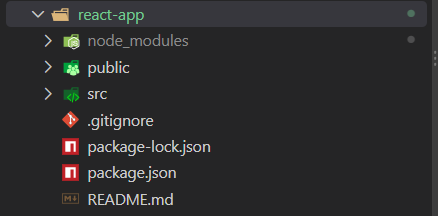
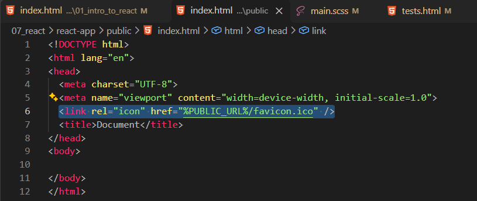
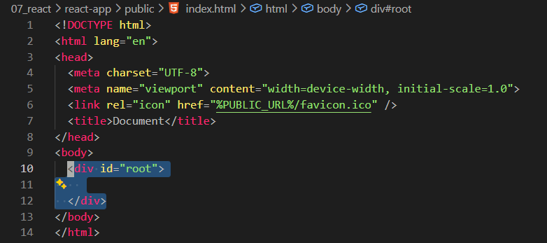
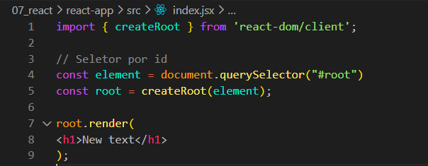
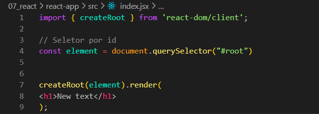
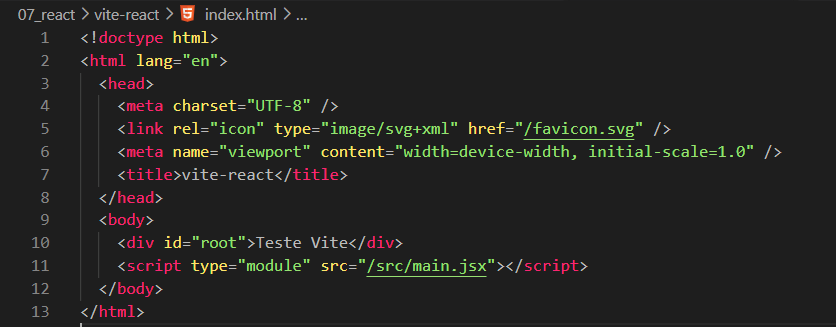

Intro:
Agora iremos comecar nossa introducao ao React.
Agora iremos comecar nossa introducao ao React.
React é uma biblioteca JavaScript que facilita a criação de interfaces para sites e aplicações web. Também existe o React Native, que permite criar aplicativos para dispositivos móveis. Além disso, o React pode ser usado com frameworks como o Next.js.
O React trabalha com componentes. Um componente é uma função que retorna elementos que serão exibidos na página, geralmente escritos usando JSX.
JSX é uma sintaxe que permite escrever estruturas parecidas com HTML dentro do JavaScript. Porém, o JSX não é HTML puro: ele precisa ser transformado para que o navegador consiga executar o código.
Podemos criar vários componentes e utilizá-los dentro de outros componentes. Isso permite dividir a interface em partes menores e reutilizáveis.
Para que o navegador consiga executar nosso código JSX, precisamos de uma ferramenta de build. Ela transforma o código que escrevemos em arquivos que o navegador consegue executar. O Vite é uma das ferramentas que podemos utilizar.
Antigamente, era comum iniciar projetos React usando o Create React App. Atualmente, essa ferramenta está obsoleta para novos projetos. Por isso, vamos conhecer seu funcionamento e depois utilizar o Vite, uma alternativa moderna.
Para criar um projeto usando essa ferramenta, podemos executar os comandos abaixo no terminal. Entretanto, esse método é apresentado apenas para entendermos o funcionamento da ferramenta antiga.
npx create-react-app my-app cd my-app npm start
O primeiro comando cria o projeto chamado my-app. O segundo entra na pasta criada. O terceiro inicia o servidor de desenvolvimento e permite abrir a aplicação no navegador.
O Vite é uma ferramenta que prepara nosso projeto para utilizar tecnologias como JavaScript, JSX e React. Também inicia um servidor de desenvolvimento para visualizarmos as alterações no navegador.
Para criar um projeto com Vite, podemos executar:
npm create vite@latest
Durante a criação, o terminal solicitará algumas informações. Escolha um nome para o projeto e selecione React como framework. Depois, escolha a opção de JavaScript, caso queira estudar React com JavaScript puro.
Após a criação, entre na pasta do projeto e execute os comandos:
cd nome-do-projeto npm install npm run dev
Substitua nome-do-projeto pelo nome escolhido. O comando npm install instala as dependências necessárias, e npm run dev inicia o servidor de desenvolvimento. O terminal mostrará o endereço que devemos abrir no navegador.
Agora vamos entender a estrutura do projeto criado pelo Create React App. Após a instalação, entramos na pasta do projeto e iniciamos a aplicação:
cd my-app npm start
A aplicação será aberta no navegador, geralmente no endereço localhost:3000. Para abrir a pasta do projeto no Visual Studio Code, podemos executar o comando code . no terminal.

Entre os arquivos e pastas do projeto, temos:
package.json: contém informações sobre o projeto, suas dependências e seus comandos.
package-lock.json: registra as versões específicas das dependências instaladas.
README.md: contém informações e instruções sobre o projeto.
.gitignore: informa ao Git quais arquivos e pastas devem ser ignorados.
src: é a pasta em que normalmente ficam os componentes e os arquivos JavaScript da aplicação.
public: guarda arquivos públicos, como imagens e ícones, que podem ser utilizados pela aplicação.
Public: o professor sugere remover alguns arquivos desnecessários para o exemplo. Porém, não precisamos apagar tudo indiscriminadamente. O ideal é manter os arquivos necessários para o projeto funcionar e remover apenas o que sabemos que não será utilizado.

Para conectar o React à página HTML, precisamos de um elemento que servirá como ponto de entrada da aplicação. Geralmente, utilizamos uma div com o atributo id="root".
< div id="root">< /div >

O elemento root funciona como um espaço reservado dentro do HTML. O React utiliza esse elemento para exibir e atualizar os componentes da aplicação.
Por exemplo, se criarmos um título usando React, ele será exibido dentro desse elemento. Os arquivos JavaScript responsáveis pela aplicação ficam normalmente na pasta src.
No exemplo do professor, ele sugere apagar os arquivos da pasta src e criar um arquivo chamado index.jsx. A extensão .jsx indica que o arquivo utiliza a sintaxe JSX.
Essa remoção é apenas uma simplificação do exercício. Em um projeto real, não devemos apagar arquivos sem antes verificar para que servem.
O Create React App já configura as ferramentas necessárias para trabalhar com JSX e módulos JavaScript. Por isso, podemos importar recursos de bibliotecas usando import.
import { createRoot } from 'react-dom/client';
const element = document.querySelector('#root');
const root = createRoot(element);
root.render(
< h1 >Novo texto< /h1 >
);

Vamos entender as partes principais desse código:
import: importa um recurso que foi criado e disponibilizado por outro arquivo ou biblioteca.
react-dom/client: fornece recursos para conectar o React aos elementos HTML da página.
createRoot: cria o ponto de entrada que o React utilizará para controlar uma parte da página.
document.querySelector('#root'): procura no HTML o elemento que possui id="root" e guarda esse elemento na variável element.
createRoot(element): prepara o elemento encontrado para receber a aplicação React.
root.render(...): exibe na página o conteúdo que passamos para o método render. Nesse exemplo, será exibido um título com o texto "Novo texto".
A diferença entre as bibliotecas é simples: react contém os recursos principais do React, enquanto react-dom fornece os recursos necessários para utilizar o React no navegador.
Podemos importar diretamente de react-dom/client porque o recurso createRoot está disponível nesse caminho. Não precisamos escrever o caminho completo até a pasta node_modules, pois o sistema de módulos resolve a importação.
Simplificando o código: como a variável root não será utilizada novamente nesse exemplo, podemos chamar render diretamente após createRoot(element).
import { createRoot } from 'react-dom/client';
const element = document.querySelector('#root');
createRoot(element).render(
< h1 >Novo texto< / h1 >
);

O resultado é o mesmo. A diferença está apenas na forma de escrever o código. A primeira versão guarda o resultado de createRoot em uma variável; a segunda utiliza esse resultado diretamente.
Agora vamos observar a estrutura de um projeto criado com Vite. Ele também possui arquivos como package.json, uma pasta src e um arquivo index.html.
No Vite, o arquivo index.html normalmente fica na raiz do projeto. Ele contém a estrutura inicial da página e indica qual arquivo JavaScript deve ser executado.
Para isso, o HTML utiliza uma tag script com o atributo type="module". Esse atributo permite utilizar recursos de módulos JavaScript, como import e export.

Na pasta src, o Vite cria arquivos que fazem parte da aplicação. O arquivo principal costuma ser chamado de main.jsx. Em vez de apagar todos os arquivos, primeiro devemos entender quais são utilizados pelo projeto.